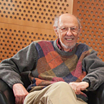
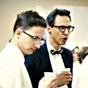
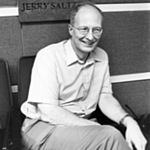
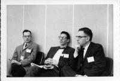
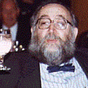
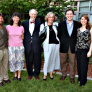

Loading

Professor Fernando José Corbató, known to everyone as Corby, died in July 2019. A memorial gathering was held at MIT on November 4, 2019, attended by many Multicians. (Program) Several of us spoke briefly about him.
Reminiscences at the Gathering
Introduction by Daniela Rus
Thank you, everyone, for joining us to celebrate the life of Fernando Corbató, a pioneer of computing and professor emeritus who all of us at MIT knew simply as "Corby." We're joined today by a number of people who'd like to share their memories of Corby and the lasting impression he made on our lives.
Emily, Carolyn, Nancy, Jason, David, extended Corby family, on behalf of the entire CSAIL and EECS communities I would like to express our deepest sorrows for your loss. We join you in mourning Corby, and in recognizing the many legacies that he left behind. It is not an exaggeration to say that the work we do at MIT today simply wouldn't be possible without Corby. He was a near and dear friend and colleague who worked with so many members of our community over the last *60*-plus years. He inspired countless students to devote their lives to computer science, before the discipline was even taken seriously in the field of mainstream science.
It is difficult to overstate his contributions to the field. Corby led the development of one of the world's first operating systems, the "Compatible Time-Sharing System" or CTSS. CTSS allowed multiple people to use a computer at the same time, dramatically increasing the speed at which programmers could work. (It's also widely credited as the first computer system to use passwords, leading to many historians to refer to Corby as "the father of the password"!)
As most of you know, Corby also led the time-sharing effort of Multics, which directly inspired operating systems like Linux and laid the foundation for many aspects of modern computing.
His work not only led to the launch of Project MAC (and therefore our laboratories LCS and CSAIL), but helped pave the way for the more widespread use of computers in society. For his work, Corby was recognized with many awards, including the ACM Turing Award in 1990. I'd love to step back and give you a little bit of a sense of how Corby came to become the visionary figure he was. Corby was born in 1926 in Oakland, California. At 17 he enlisted as a technician in the U.S. Navy, where he first got the engineering bug working on a range of radar and sonar systems. After World War II he earned his bachelor's degree at Caltech before heading to MIT to complete a PhD in physics.
As a PhD student, Corbató met Professor Philip Morse, who recruited him to work with his team on Project Whirlwind, the first computer capable of real-time computation. After graduating, Corbató joined MIT's Computation Center as a research assistant, soon moving up to become deputy director of the entire center.
It was there that he started thinking about ways to make computing more efficient. For all its innovation, Whirlwind was still a rather clunky machine. Researchers often had trouble getting much work done on it, since they had to take turns using it for half-hour chunks of time.
Time-sharing was a revolutionary concept that allowed other programs to run while the first program was waiting for a human user to type a request, thus allowing the user to interact directly with the first program.
In the early 60s he started talking more about the concept with MIT's Bob Fano and J.C.R. Licklider, who was then director of the Department of Defense's Advanced Research Projects Agency (ARPA).
In the fall of 1962, Corby's work helped MIT launch "Project MAC", a vibrant research space that was later where he led the development of Multics. More than 50 years later, Project MAC has grown in size and scope to become CSAIL, MIT's largest interdepartmental research lab.
Corby wore many other hats during his time at MIT, serving as associate department head for computer science and engineering from 1974 to 1978 and 1983 to 1993. More important than his titles and awards, however, was the dedication and diligence that he brought to our world. His enthusiasm for computing was contagious for everyone who interacted with him. Corby was a beloved colleague to all of us at CSAIL and EECS. His passion for improving human life through technology is reflected in how he never missed the EECS faculty lunches not the CSAIL annual meetings. In recent years the CSAIL annual meeting often overlapped with his July 1 birthday. I still have in the back of my mind the image of Corby ever present at all the talks, dancing with Emily in the evening, and blowing the candle on his birthday cake.
All of us at MIT feel privileged to have been able to know Corby and be part of his world.
Reminscences by President L. Rafael Reif
Members of the Corbató family, MIT colleagues and Corby's many admirers and friends --
It is an honor to be asked to speak about Corby: a giant in his field, a creative force and a beloved member of the MIT family.
Today we will hear from many people who were fortunate to know Corby and his work much better than I. But I do have very fond memories of him.
Corby's countless awards and achievements showed the world his brilliance, but they did not reveal his remarkable character. And as a young faculty member, that was what I found most striking about him: his character. When I met him, Corby was already a luminary in computer science. But what impressed me the most is that he was a gentleman.
Corby spoke thoughtfully, calmly and with a soft voice. That was quite a contrast with most of my computer science colleagues at the time!
They spoke very fast, were incredibly impatient, always interrupted me -- honestly, because they knew what I was saying before I finished my sentence! And they spoke with passion and intensity about everything.
Corby had the same passion and intensity. But he conveyed them in a gentlemanly way. I admired his intellect immensely, and I always enjoyed speaking with him. He was both a terrific colleague and a role model for how to be incredibly successful in your research -- and be delightfully humble about it.
Daniela shared a few highlights of Corby's extraordinary career: Project MAC, Multics, CTSS and the prestigious Turing Award. And I know others here today will have much to say about his many contributions to the development of modern computing.
But it is not only his pioneering work that made Corby an MIT legend. It was the way he lived his life. He showed us that it is possible to achieve so much, to inspire so many, and at the same time, to be the most marvelous human being one could imagine.
We will miss Corby deeply. But we will treasure his legacy, and we will aspire to live up to his example.
Reminiscences and Video Tribute by Frans Kaashoek

Reminiscences for Corby's memorial gathering by Jerry Saltzer
Jerry sent a video message.
Hi. I'm Jerry Saltzer. Thank you for letting me share some reminiscences about Corby.
I met Corby in the fall of 1961 when I was a new graduate student assigned as his teaching assistant for M.I.T. subject 6.251. Despite my never having taken a course in computing Corby took me in and put me to work.
Watching and listening to Corby I learned how to give a lecture, how to lead a recitation, and how to organize an operating system.
Corby supervised my doctoral thesis at a time when there was great skepticism in the department about whether there was enough intellectual content in the design of computer systems to warrant a doctoral-level thesis. Corby and Bob Fano together managed to convince the department that there was something to this field worthy of study.
As a faculty member I continued to work closely with Corby for forty years.
---- Corby is best known for his work on time-sharing . . .
In replacing batch processing, the original goals of time-sharing were two: First, to share the expensive hardware and second, to respond with answers on a human time scale. Corby applied two key ideas to make time-sharing work: short-term scheduling of the hardware with a multi-level feedback queue and using on-line storage, rather than punched cards, for both programs and data.
Seeing how users responded to the move from punched cards to on-line storage led Corby to realize that a third goal can be even more important than the original two: the ability for users to easily share programs and data. Multics was a rethinking of time-sharing with information sharing as its central concept.
At the same time Corby foresaw that information sharing raised concerns about privacy and he insisted that there be controls on the extent of sharing. Thus, as early as the second iteration of the Compatible Time-Sharing System he introduced passwords and permissions.
---- Corby also made important contributions to the management of software development . . .
The dominant paradigm for software development in the 1960s was to gather requirements, design the system, implement the designed system, and deliver it to users. Corby realized early on that for novel software systems a more iterative approach would be more likely of success. To that end he pioneered several software management practices.
Probably the most important of Corby's practices was to start by building the minimal system that does something useful. Then, only after it is working, add features one at a time by revision, at each point checking to see that the basic system still works.
Multics was built with this revise-as-you-go approach and its development also exploited Corby's second and third, closely related practices: As soon as possible it became the development system for its own development and it was probably the first large operating system that every night was recompiled from scratch and then installed and used to continue system development the next day.
Corby also enthusiastically advocated a fourth important management practice: intensive communication among the staff, with extensive documentation before implementation and frequent brief meetings in which staff members gave talks about what they were doing. His model was that everyone working on a project should be aware of what everyone else was doing.
Taken together these four management practices would today be recognized with the buzzword "DevOps".
No matter how off-the-wall someone's proposal was, Corby always listened calmly and responded gently. At the same time he had an uncanny ability to come up with just the right wry comment that illustrated how off-the-wall the idea was.
A typical piece of advice from Corby that illustrates his way of thinking about the world as a system: To keep your office from overflowing, look at your in-basket each morning and use that as a guide to the amount of stuff you need to throw away today.
Another typical piece of Corby's advice: Updates for a loose-leaf notebook should pass the drop test. If you drop the notebook and its update pages on the floor, there should be enough information on each sheet to reassemble the notebook in the proper order and correctly get it updated.
Corby was also a master of elliptic criticism. Rather than saying "You screwed up!" he would say "Sometimes people make the mistake of . . . ", and then go on to describe the kind of mistake you didn't realize that you just made.

---- Let me close with a few personal notes . . .
Emily and my wife Marlys knew each other when they were graduate students at the New England Conservatory of Music. Marlys introduced Emily to Corby. They seemed to hit it off and the next thing we knew there was a wedding.
Although they had four children and his house in Newton had a spacious back yard with ample room to add a swimming pool, to avoid the temptation Corby kept handy a catalog of swimming pool equipment and accessories to remind him why he shouldn't.
He and Emily were gracious hosts of dinners in Newton and summer visits to Plum Island. The conversations were always wide-ranging yet without getting in to professional topics.
Finally, everyone who knew Fernando José Corbató called him Corby. The surest way to identify a stranger in the room was when that person addressed Corby as "Fernando".
Thank you, Corby, and goodbye.

Reminscences by Richard G. Mills, Sr.
Ms. Corbató and family; President Reif; Director Rus; colleagues; friends of Corby, I am Dick Mills, and I was Assistant Director, under the late Bob Fano, of Project MAC.
But tonight, I am just one of the many whose careers and personal lives the late and much-loved Fernando J. Corbató has profoundly affected. And as is true of many of us here, I have considered Corby a valued friend since our first meeting over 65 years ago.
I have many memories of Corby from those years, and I will share a few of them with you tonight.
But anecdotes aside, I really hope to leave with you tonight one clear message. It is the message of my respect and admiration -- of course for Corby's understated brilliance as an innovator, but also of my admiration of the great heart that underlay Corby's talents as a patient, empathetic teacher, a lucid communicator, an inspiring team leader, and a warm human being.
Turning to memories: I remember from that first meeting 65 years ago, doctoral candidate Corby lending me a welcome hand as we two struggled to get the old Whirlwind computer to complete necessary calculations, his for his dissertation, and mine for my undergraduate thesis.
I remember from the late 1950s, Corby's leadership of the team of Comp Center research assistants of which, during my grad-school years, I was a member. With Corby's guidance we, with our IBM 704, provided computer support to the campus, having to deal with such early tools as IBM's first, and very user-UNfriendly, FORTRAN compiler.
I remember, beginning in 1963, Corby's deep engagement with Project MAC. His initial goal was the stabilization and refinement of CTSS. And by summer that same year, that pioneering system had become stable enough to support the Project MAC kickoff Summer Study.
I remember Corby's later critical involvement in MAC as we searched for a hardware platform suitable for the erection of a purpose-built, rather than a patched-on- afterward, time-sharing system. That done, the Project, and Corby, switched energies to the development of Multics.
All long-ago memories.
I have said my farewells to my friend, Fernando J. Corbató. But I remember you, Corby.
Brilliance. Empathy. Heart.

Reminscences by Tom Van Vleck
I had the good fortune to work for Corby at Project MAC in the mid 60s, on CTSS and Multics.
It was hard and exciting work, with great people. We believed that we were changing the way people used computers, with Corby as our leader.
When I was thinking about what to say today, I thought I'd talk about what we learned from Corby.
... and the first thing I learned was to ask "what did we learn?" -- to try to draw a lesson from everything.
Corby encouraged us to look for explanations, to ask ourselves:
- what is the theory that explains what we observed?
- what else is like this?
- what can we change to get a different result?
- is this a special case of a more general theory?
For example, Corby didn't see CTSS as just a novel thing to do with a big mainframe; he saw it as a first step toward transforming computing into the vision of a computer utility.
I learned other things from Corby as well.
Corby inspired us to set ambitious goals. Multics was criticized for taking on too much .. but the nine goals for Multics were part of a big vision.
Corby taught us to communicate We had to write clearly about our plans. We published our writings to the team (included keeping a document repository and an index.) Corby and Charlie Clingen's Managerial View paper says we "couldn't have done Multics without the xerographic copier," because every member of the team was given copies of every document.
Corby taught us to keep improving our designs by open discussion of every technical point, to keep evolving our product and our process, with attention to consistency, efficiency, and elegance, by distributing draft documents, getting comments, revising, learning from suggestions. And only then to write code.
Corby taught us courtesy and kindness by his example.
Reminscences by Bob Daley
Professor Fernando José Corbató, Corby to most us, had such a profound influence on my life and career, I find it a difficult to make this about Corby and not about me. Corby took over the Computer Center around 1960 while I was working for great gal then named Marge Merwin. At this time, the only way to use the MIT computer was to submit your card deck, wait several hours for your printout, and discover you had a missing comma.
Corby had a much different vision of how computers could be used. Make the computer directly accessible to the users with no queues in between. Each user would access the computer directly through a terminal to see results immediately at the terminal. Each user would have the feeling that the computer was his or her personal computer, we called it time sharing.
This required the development of security methods to protect the system and other users from errant user programs. Privacy was also addressed as well as perhaps the first use of user passwords. In the very first version of CTSS, all user files were on individual user tapes, which greatly limited the number of users, based on available tape drives.
One day Corby dropped an IBM 1301 disk drive manual on my desk. He said we would be getting one of these in the next few weeks. It will probably be serial #1 or #2 and there is no software for it, so please figure out how we're going to use it. Thus came the first version of the disk file system. The IBM 709 tube machine was upgraded to the newer solid state 7090 and then the 7094. Corby arranged a so-called RPQ to add memory protection for system and user programs, and CTSS grew to serve up to 30 users.
Corby now added another element to his vision. If you have lots of users using the computer, they need to be able to share information, while on the computer. This created a new revised file system to make sharing easy, while providing privacy and security controls for user files. This created the need for new privacy and security, access control methods.
But CTSS could never meet Corby's more powerful vision, the concept of a computer utility. A service as available and reliable as your electric company. Computer power would be readily available to any number of users at any time of day as easily as clicking a light switch. Corby's concept of a computer utility was the driving vision behind Multics which followed CTSS starting in 1964/65.
Corby's vision was powerful enough, that we were able to get significant funding through DARPA, and pull in General Electric Computer Systems and Bell Telephone Labs to Corby's vision. This all came together with a series of papers at the 1965 Fall Joint Computer Conference, where most of our design ideas were presented in formal papers from members of all three organizations.
Corby was insistent that the designs for all software be written down, reviewed, and ultimately published as part of the Multics System Programmer's Manual. He set the goals for the design effort in his Introduction to the Multics Design Notebook which outlined the high level goals for all design efforts. He wanted us to understand the "utility" goal of 7/24 operation with the fastest possible recovery from errors (e.g., a few seconds).
Corby insisted that the designs be implemented in a high level language. Corby's Law states that the number of lines of code written by a programmer in a time period remains the same regardless of thee language used. So, we chose to base all of our designs on a subset of PL/I called EPL, which could model the data structures in our design.
Corby's vision, or should I say visions, drove a great deal of the design effort. What I believe sets Corby apart from many others, is his insistence that visions be realized with real implementations, where the ideas could be tested and evolve. In this way, our understanding of the implications can grow and create new visions.
I believe I subconsciously continue to carry much in the way of Corby's thinking, planning and "being" with me throughout my career and my entire life. I owe a major portion of whatever success I've had in software management, and in software architecture directly to Corby.

Reminscences by Peter Neumann
Some say toMAYto, and some say toMAHto, and some say coBAYto when you say corBAHto. But it's really COR-bah-TOE.
Because nothing relevant seems to rhyme with "Corby", here's something that might be appropriate, even if the scanning is somewhat awkward:
There once was a man named COR-bah-TOE
Whose wisdom was always IN-the-KNOW.
"Timesharing" he said
as he forged on ahead,
"seems like the better WAY-to-GO."
To me, Corby was human, humble, modest, questioning, inspirational, and much more. He was a very close friend, colleague, and mentor. He was always a treat to be with. He understood software engineering before the term was coined, and his legacy will always be remembered. [FerNANdo est non forGOTto, even if he was not corBAHto!]!
Corby and Emily and their four kids (Carolyn, Nancy, David, Jason), visited me and my three kids (Hellie, John, Chris) at our place in Chilmark, Martha's Vineyard, probably in the summer of 1971, and I believe that was when they decided to get married.
He was my best man when I married Liz in 1997 (see the photo of Emily, Corby, me, and Liz). We had many times together, including many stopovers on the way home from the MIT departmental retreat in Chatham Bars. For my 80th birthday (in 2012), they flew out to Palo Alto for a wonderful surprise that Liz had engineered. That was really special.

Reminscences by Jack Dennis
Back in 1961 and 1962 meetings were held to help MIT plan for its future computing facilities. Corby and his team had recently demonstrated time-shared operation of the Computation Center's IBM system, a continuation of the beneficial relationship of MIT and IBM that began with establishment of the Computing Center in 1956. From 1961 It was my privilege to work with Corby and other faculty and staff to envision the future of computing facilities at MIT, as a member of the Long Range Computer Study Group. An outcome was that I joined Corby, Robert Graham and Edward Glaser to evaluate prospective vendors for MIT's Multics computer utility. It was to Corby's great credit that he faced up to IBM and the MIT administration in support of our strong recommendation for a non-IBM system. During development of Multics, there was tension between Corby's desire for an incremental approach and Ted Glaser's desire to directly implement our new system concept. Corby had the remarkable ability to work out his differences with Glaser in the best interests of the project. It has been great to work with such strong and honest people.
Reminscences by Paul Penfield

Reminscences by Joel Moses
I came to MIT in 1963 as a graduate student in order to work on time-shared computers as well as AI. I became head of the MIT EECS Department in the 1980's. For a number of years Corby was the Associate Head of the EECS Department for Computer Science and Engineering.
Corby was renowned in the EECS world due to his work on time shared. He became a magnet for new faculty hires in CS as well as research funding in computer systems world-wide.
I have thought over the years how Corby became such as deep systems person. I think his experience in the U S Navy during WW II led to his deep respect for team work, "One for all - all for one." The department heads and their spouses formed a team that worked together for several years at a time.
I am reminded of the following story that involved Corby:
Corby had a safe in his Associate Department Head's office. One day he wanted to remove a file from the safe. Unfortunately, he forgot the combination to the safe. No matter what combination he tried, the safe would not open. Corby remembered that Professor Sussman of the EECS Department was a locksmith. He called Sussman and asked him to come and open the safe. Gerry Sussman came and brought his bag of tools. Gerry told Corby to clean up the area around the safe because there was likely to be a mess there once he got started. Sussman then went up to the 9th floor machine shop in the building. He brought down an oxy-acetylene torch on a big cart and set it outside of Corby's office. Sussman then excused himself to go back to his office. After five minutes elapsed, Sussman returned to Corby's office to find that Corby magically remembered the combination to the safe, which was exactly the outcome that Sussman had hoped to elicit.
The story of the safe should remind many of us that Corby invented passwords.
Reminscences by Arvind
Reading letter from Jayadev Misra, Schlumberger Chair Emeritus, University of Texas at Austin.
Reminscences by Family


Reminscences by Carolyn Corbató Stone
Video Tribute
Reminscences by Jason Gish
Reminscences by Emily Corbató
Reminscences by Others
This is a place for other former students, employees, colleagues, and friends to add their stories. Contact the editor.
Reminscences by John Gintell
Corby was really a great leader of the Multics project -- ranging from the manner in which he articulated his broad overview and objectives to attention to detail. I joined CISL in early 1967 and had a desk in the GE office on the 7th floor. But soon after I started as I was working with Project Mac people on dump tools and metering I also had a desk on the 5th floor with the Project MAC people. Corby and Jerry Saltzer were very involved on what everyone was doing and I had many fruitful formal and informal interactions with them as we figured out how to address the many challenges. Jerry and I co-authored a paper: "The Instrumentation of Multics" in 1969.
After a while I became manager of the Multics development unit of CISL and had even more interactions with Corby and Jerry Saltzer. When Bob Daley left the project I took on the role of overall project manager of the joint GE-Honeywell/MIT developers. I often had to run things by Corby and every interaction was wonderful; he always listened carefully to what I was talking about and gave lots of constructive advice. So to some extent I had two bosses: Corby and Charlie Clingen.
Corby ran weekly meetings of everyone on the project which was a great way to keep people informed about what was going on and keep everyone thinking that we working on one project even though we were from separate organizations with very different objectives. We continued to hold weekly meetings with the CISL staff; and I carried that practice on in future projects after I was no longer was working on Multics.
Over time after Honeywell replaced GE and we were turning Multics into a serious product we hired quite a few of the MIT people. Overall this was an incredible model of how to achieve technology transfer from a University research group to a Company Product development group made possible in part because of Corby's style of management and the fact that the two groups were in the same building during the early stages of the project.
Created 2019-11-06. Last updated 02 Aug 2026.